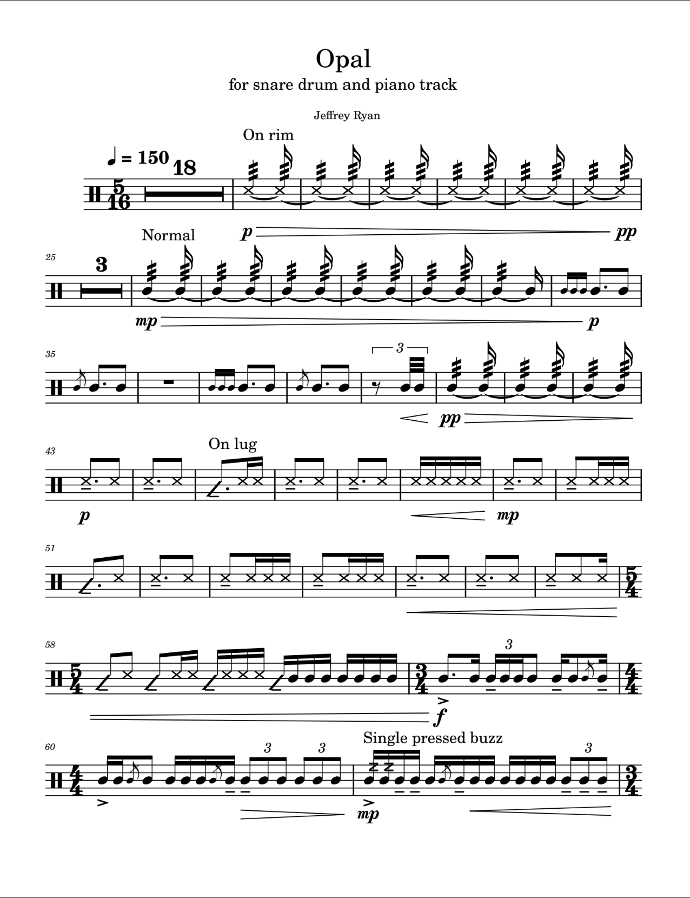

Solo snare drum and electronics | 5'50" | 2023
Excerpt from opening (MIDI)
Opal is my first work with an electronic track. I wanted to create something explosively colorful to match the force of a snare drum. The electronic track is built from eleven pianos and draws from the styles of Zelda: Breath of The Wild and djent artists like Tigran Hamasyan. Its title was chosen late in the writing process, inspired by the bursts of color and energy that are frozen inside opals.
This piece is currently unpublished. Please email jcr101402@gmail.com with any questions.